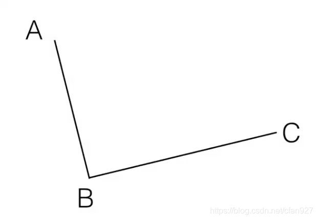
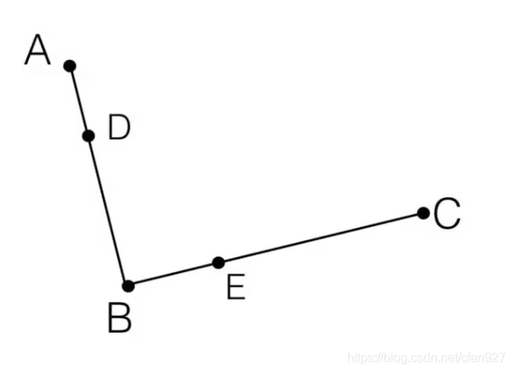
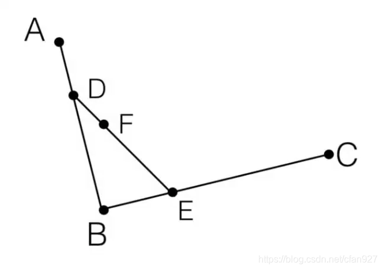
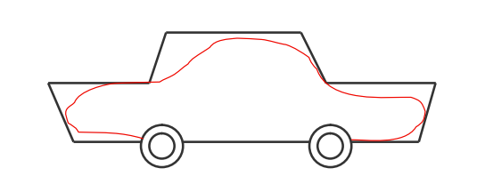
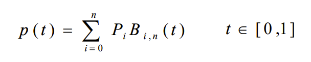
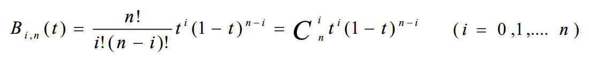
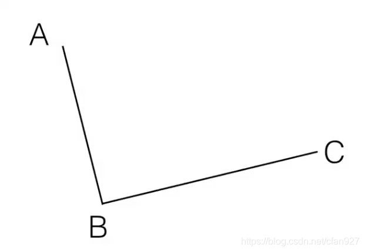
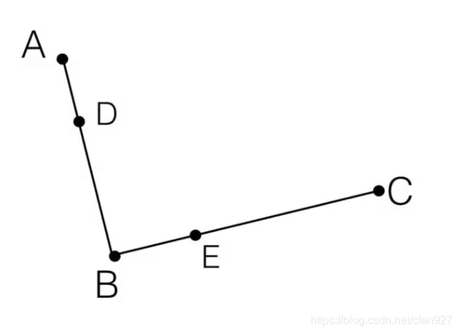
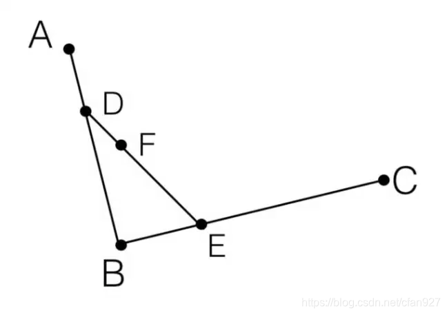

如何绘制bezier曲线?
要想得到bezier曲线上的点，我们可以直接利用bezier曲线方程，但是该过程比较复杂，所以我们一般使用de Casteljau提出的递推算法来实现。
首先用直线连接相邻的控制点
然后，在这些线之间按比例进行插值以获得中间点，AD/DB=BE/EC
重复这个过程一直到只剩下一个点，AD/DB=BE/EC=DF/FE，F即为曲线上的目标点
下面分别给出了三控制点和四控制点的bezier曲线生成动画


理解并掌握贝塞尔曲线绘制方式的交互式文章
贝塞尔曲线（Bezier Curve） 是一种广泛应用于计算机图形学、动画、CAD（计算机辅助设计）和字体设计等领域的数学曲线。
1962 年，汽车工程师贝塞尔（Bezier）构造了一种以逼近为基础的参数曲线和曲面的设计方法，并用这种方法完成了一种称为 unisurf 的曲线和曲面设计系统。贝塞尔的想法是在进行汽车外形设计时，先用折线段勾画出汽车的外形的大致轮廓，然后用光滑的参数曲线去逼近这个折线多边形:
贝塞尔曲线由控制点定义。给定空间n+1个点的位置矢量Pi(i=0,1,...,n),则bezier曲线可定义为：
其中Pi(i=0,1,...,n)构成该bezier曲线的特征多边形，B(t)是n次Bernstein基函数：
贝塞尔曲线（Bezier Curve）在计算机科学诸多领域有着广泛应用：
bezier曲线有助于在动画中创建平滑的过渡。如圆,抛物线等。
bezier曲线用于在图形学设计工具(如adobe illustrator)中创建曲线图形。
bezier曲线可以制作UI/UX界面中平滑的曲线和动画.
要想得到bezier曲线上的点，我们可以直接利用bezier曲线方程，但是该过程比较复杂，所以我们一般使用de Casteljau提出的递推算法来实现。
首先用直线连接相邻的控制点
然后，在这些线之间按比例进行插值以获得中间点，AD/DB=BE/EC
重复这个过程一直到只剩下一个点，AD/DB=BE/EC=DF/FE，F即为曲线上的目标点
下面分别给出了三控制点和四控制点的bezier曲线生成动画